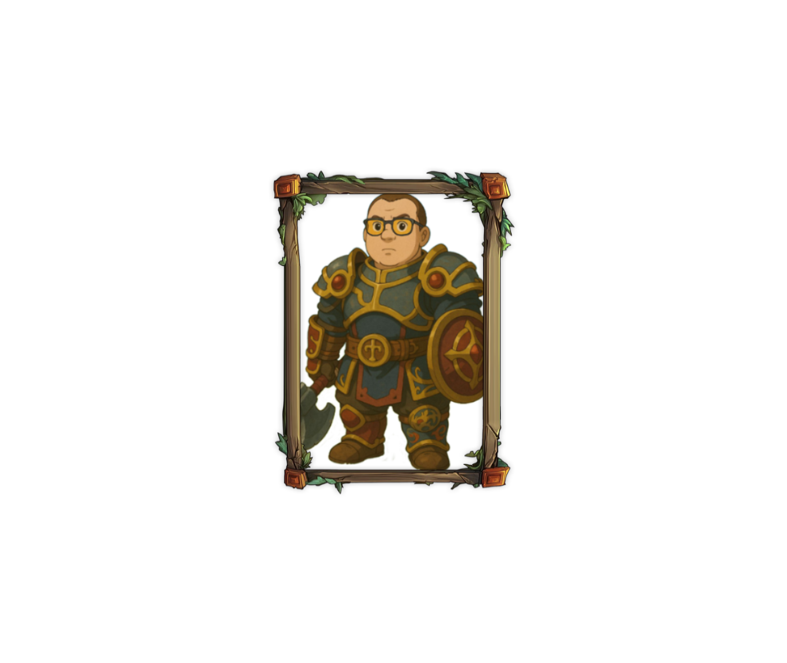

Характеристики билда
- Роль: Основной танк
- Сложность: ★★☆☆☆
- Выживаемость: ★★★★★
- Урон: ★★☆☆☆
- Рейтинг PvE: 9.5/10
Подробное описание
Этот билд ориентирован на максимальную выживаемость в PvE-контенте. Идеально подходит для танкования в рейдах и сложных подземельях.
Ключевые особенности:
- Высокая устойчивость к физическому и магическому урону
- Эффективные навыки самоисцеления
- Усиленная защита группы
- Простота в освоении
Рекомендуемые характеристики:
- Основная характеристика: Сила
- Вторичные характеристики: Выносливость, Защита
- Критический удар: Минимальный приоритет
Рекомендуемая экипировка:
Комплект "Страж Утгарда" (мифический) с акцентом на показатели защиты и здоровья. Предпочтительные характеристики на предметах:
- + Защита
- + Здоровье
- + Сопротивление урону
- + Скорость восстановления